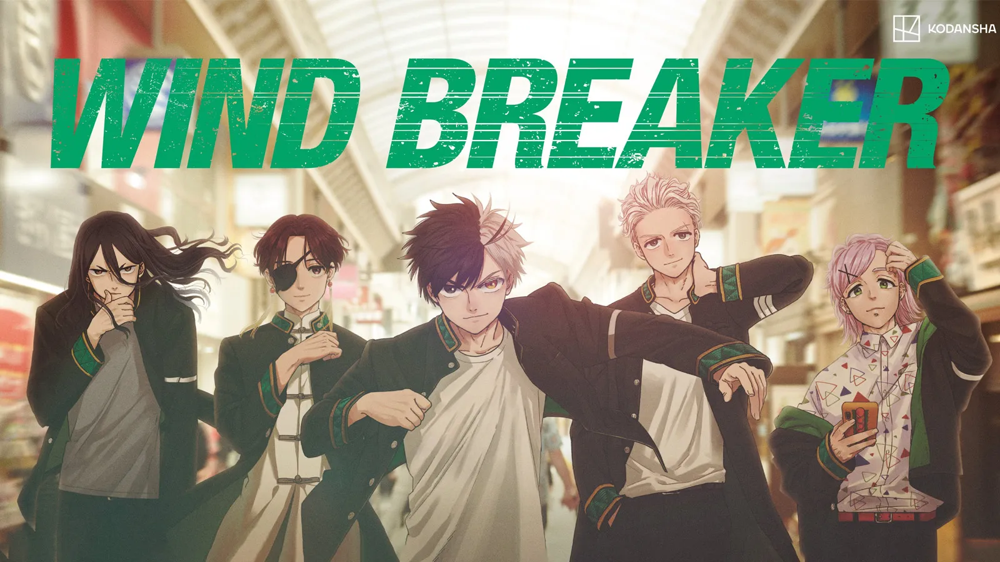

Wind Breaker
About:
Wind Breaker is a Japanese manga series written and illustrated by
Satoru Nii. It began serialization on Kodansha's Magazine Pocket manga
website in January 2021. As of March 2024, the series' individual
chapters have been collected in 16 tankōbon volumes
Season-1